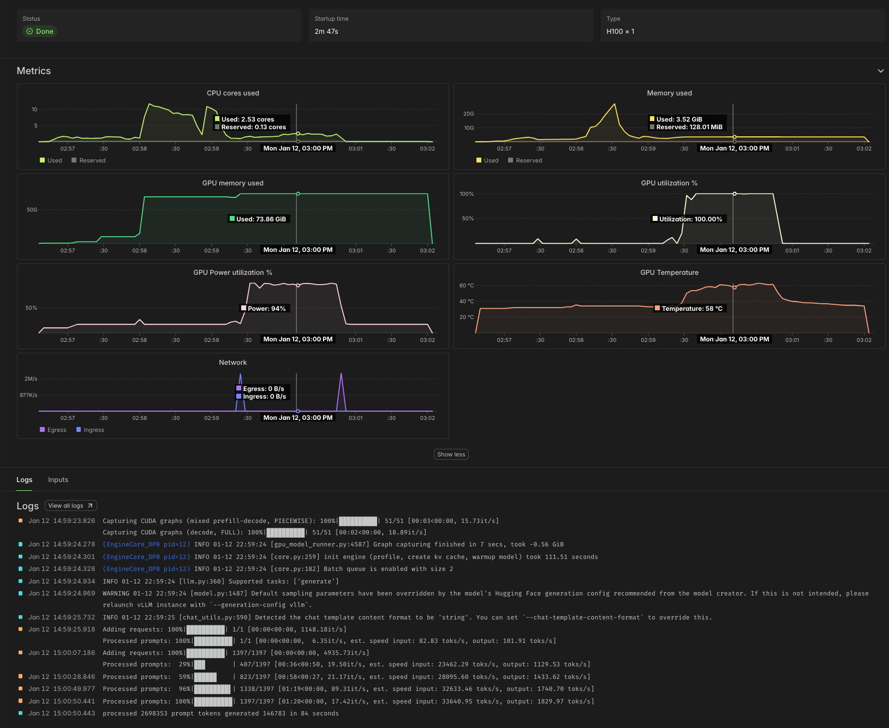

Run LLM inference at maximum throughput
This example demonstrates some techniques for running LLM inference at the highest possible throughput on Modal.
For more on other aspects of maximizing the performance of LLM inference, see our guide. For a simpler introduction to LLM serving, see this example.
As our sample application, we use an LLM to summarize thousands of filings with the U.S. federal government’s Securities and Exchange Commission (SEC), made available to the public for free in daily data dumps via the SEC’s Electronic Data Gathering, Analysis, and Retrieval System (EDGAR). We like to check out the Form 4s, which detail (legal) insider trading.
Using the Qwen 3 8B parameter LLM on this task, which has inputs that average a few thousand tokens and outputs that average a few hundred tokens, we observe processing speeds of ~30,000 input tok/s and ~2,000 output tok/s per H100 GPU, as in the sample Modal Dashboard screenshot below. Note the 100% GPU utilization, indicating the absence of host overhead, and the high GPU power utilization, further indicating we are close to the hardware’s physical limits.

At Modal’s current rates as of early 2026, that comes out to roughly 4¢ per million tokens. According to Artificial Analysis, API providers charge roughly five times as much for the same workload.
Organizing a batch job on Modal
We start by defining a Modal App, which collects together the Modal resources our batch job uses. While we’re at it, we import a bunch of the libraries we will need later.
import datetime as dt
import time
from dataclasses import dataclass
from datetime import datetime
from pathlib import Path
from zoneinfo import ZoneInfo
import modal
MINUTES = 60 # seconds
app = modal.App("example-vllm-throughput")Many batch jobs work nicely as scripts — code that is run
from a shell, ad hoc, rather than deployed.
For that, we define a local_entrypoint with code that runs
locally, when we pass our script to modal run,
and triggers/orchestrates remote execution.
We demonstrate two techniques for collecting the results of a batch job,
toggled by passing the --wait-for-results/--no-wait-for-results flag via the command line.
When we --wait-for-results, we pass the modal.FunctionCall IDs
that make up our batch job to FunctionCall.gather, which
returns once our job is done. Here, we just print the results,
but in a more realistic setting you might save them to disk.
Instead of waiting for results, we can retrieve them asynchronously
based on the FunctionCall ID — a simple string.
Results are stored in Modal for one week.
In the local_entrypoint below, these IDs are printed,
but you might store them in a file on disk, add them to your database,
or put them in a Modal Queue or Dict for later retrieval.
@app.local_entrypoint()
def main(lookback: int = 5, wait_for_results: bool = True):
jobs = orchestrate.remote(lookback=lookback) # trigger remote job orchestration
if wait_for_results:
print("Collecting results locally")
batches = modal.FunctionCall.gather(*jobs)
for batch in batches:
print(*(result.summary for result in batch if result.form == "4"), sep="\n")
print("\n")
print("Done")
else:
print("Collect results asynchronously with modal.FunctionCall.from_id")
print("FunctionCall IDs:", *[job.object_id for job in jobs], sep="\n\t")The meat of the work is done in our orchestrate function.
It manages the overall pipeline of execution,
starting with extracting data from the raw data source,
followed by transforming it into a cleaner format
and then processing it with the LLM.
For both extraction and transformation, we use .map,
which fans out inputs over containers in parallel.
Each invocation handles at most 1,500 rows,
which leads to runtimes of about five minutes per call
By parallelizing the calls, we finish processing everything in about five minutes.
“Rechunking” our data from a list of filings by day into a list of filings of fixed size requires a little helper function:
def rechunk(lists, size: int = 1_500):
from itertools import chain, islice
it = iter(chain.from_iterable(lists))
while chunk := list(islice(it, size)):
yield chunkFor the LLM call, we use .spawn,
which triggers asynchronous execution of the LLM, immediately
returning the FunctionCall that can later be used to .get the result
(or .gather several results).
We run it as a .remote Modal Function call
so that it can keep running even after our local client disconnects
(so long as we use modal run --detach).
In that case, we dump the FunctionCall IDs into the logs,
but you might also write them to an external store for later retrieval.
The app.function decorator below is all we need to set turn this Python function
into a remote Modal Function!
@app.function(timeout=30 * MINUTES)
def orchestrate(lookback: int) -> list[modal.FunctionCall]:
llm = Vllm()
today = datetime.now(tz=ZoneInfo("America/New_York")).date() # Eastern Time
print(f"Loading SEC filing data for the last {lookback} days")
folders = list(extract.map(today - dt.timedelta(days=ii) for ii in range(lookback)))
folders = list(
filter( # drop days with no data (weekends, holidays)
lambda f: f is not None, folders
)
)
print("Transforming raw SEC filings for these dates:", *folders)
filing_batches = list(transform.map(folders))
n_filings = sum(map(len, filing_batches))
submission_batches_gen = rechunk(filing_batches)
print(f"Submitting {n_filings} SEC filings to LLM for summarization")
jobs = list(llm.process.spawn(batch) for batch in submission_batches_gen)
if jobs:
print("FunctionCall IDs:", *[job.object_id for job in jobs], sep="\n\t")
return jobsBefore going any further, we should agree on the format that our transform and llm.process functions will use to communicate
individual elements.
We’ll use a lightweight Python dataclass to represent
each SEC Filing.
For our task, we’re going to take the text of a filing and produce
a summary. So the text is mandatory and the summary starts out empty (None),
to be filled in by the LLM.
We’ll also keep a bit of metadata that should be included.
But we’re not sure all of these fields will exist (API data is messy!),
so we reserve the right to set them to None.
@dataclass
class Filing:
accession_number: str | None
form: str | None
cik: str | None
text: str
summary: str | None = NoneWith the basic orchestration set up, let’s implement each component in turn.
Serving tokens at maximum throughput
First, the LLM service.
Configuring vLLM for maximum throughput
We choose the vLLM inference engine. You might alternatively use SGLang. In our experience, new models and other features are implemented first in vLLM, and vLLM has a small edge in throughput over SGLang, but either can work well.
vllm_image = (
modal.Image.from_registry("nvidia/cuda:12.9.0-devel-ubuntu22.04", add_python="3.13")
.entrypoint([])
.uv_pip_install("vllm==0.13.0", "huggingface-hub==0.36.0")
.env({"HF_XET_HIGH_PERFORMANCE": "1"}) # faster model transfers
)vLLM will automatically download the model for us and produce some compilation artifacts, all of which are saved to disk. Modal Functions are serverless and disks are ephemeral, so we attach a Modal Volume to the locations where vLLM saves these files to ensure that they persist.
hf_cache_vol = modal.Volume.from_name("huggingface-cache", create_if_missing=True)
vllm_cache_vol = modal.Volume.from_name("vllm-cache", create_if_missing=True)Like a database or web server, an LLM inference engine typically has a few knobs to twiddle to adjust performance on different workloads.
First and foremost, you need to pick the hardware it will run on. We’ll be running a smaller model in 8bit floating point format. Hopper and later GPUs have native support for this format. To maximize throughput, we want to ensure our inference is compute-bound: the bottleneck is not loading weights/KV cache from memory, it’s performing computations on those values. Roughly speaking, we want to be able to put together a batch whose size is within an order of magnitude of the ridge point arithmetic intensity of the GPU for our floating point format, which is ~600 for an H100 SXM Tensor Code on FP8 data.
A single H100 GPU has enough GPU RAM for pretty large batches of this data for this model, so we stick with one of those — and just one! Deploying onto multiple GPUs would increase throughput per replica, but not throughput per GPU and so not throughput per dollar.
GPU = "h100"The dictionary of arguments below cover the knobs we found it important to tune in this case. Specifically, we set a maximum sequence length, based on the data, to give the engine more hints about how to pack batches. We select FlashInfer as the provider of the attention kernels, which vLLM recommends for higher throughput in offline serving. Finally, we turn on the asynchronous batch scheduler, which gives a small boost to throughput.
vllm_throughput_kwargs = {
"max_model_len": 4096 * 4, # based on data
"attention_backend": "flashinfer", # best for throughput
"async_scheduling": True, # usually faster, but not all features supported
}For details on these and other arguments, we recommend checking out the vLLM docs, which include lots of recipes and recommendations for different workloads and models.
Deploying vLLM on Modal
For offline, throughput-oriented serving,
we can use the LLM interface of the vLLM SDK.
This interface processes batches of inputs synchronously,
unlike the AsyncLLM or HTTP serving interfaces.
Dumping a large batch all at once exposes
the maximum amount of parallelism to the engine
and adds the least request management overhead,
so we can expect it to maximize throughput.
Critically, though, this means we don’t get any results
until all of them are finished — a key engineering degree of freedom
for throughput-oriented offline/batch jobs!
We use a Modal Cls to control the spinup and shutdown logic for the LLM engine.
Specifically, we create it (and warm it up with a test request)
in a method decorated with modal.enter and we shut it down in a method decorated with modal.exit.
The code in these methods will run only once per replica,
when it is created and destroyed, respectively.
In between, we run a batch of Filings through the engine,
adding the model’s output text to the summary field.
@app.cls(
image=vllm_image,
gpu=GPU,
timeout=10 * MINUTES,
volumes={
"/root/.cache/huggingface": hf_cache_vol,
"/root/.cache/vllm": vllm_cache_vol,
},
)
class Vllm:
@modal.enter()
def start(self):
import vllm
self.llm = vllm.LLM(model="Qwen/Qwen3-8B-FP8", **vllm_throughput_kwargs)
self.sampling_params = self.llm.get_default_sampling_params()
self.sampling_params.max_tokens = 1000
self.llm.chat([{"role": "user", "content": "Is this thing on?"}])
@modal.method()
def process(self, filings: list[Filing]) -> list[Filing]:
messages = [
[
{
"role": "user",
"content": f"/no_think Summarize this SEC filing in a single, short paragraph.\n\n{filing.text}",
}
]
for filing in filings
]
start = time.time()
responses = self.llm.chat(messages, sampling_params=self.sampling_params)
duration_s = time.time() - start
in_token_count = sum(len(response.prompt_token_ids) for response in responses)
out_token_count = sum(
len(response.outputs[0].token_ids) for response in responses
)
print(f"processed {in_token_count} prompt tokens in {int(duration_s)} seconds")
print(f"generated {out_token_count} output tokens in {int(duration_s)} seconds")
for response, filing in zip(responses, filings):
filing.summary = response.outputs[0].text
return filings
@modal.exit()
def stop(self):
del self.llmAnd that’s it for the LLM portion of the pipeline! The remainder of this document is code and explanation for the data loading and processing steps. The details are mostly specific to this dataset, but there are a few general Modal tips and tricks for batch processing along the way.
Transforming SEC filings for batch processing
We can avoid having to deal directly with the low-level
details of the SEC’s data format by using the edgartools library.
And we can avoid worrying about compatibility with the other libraries
in our project by putting it in a separate container Image.
data_proc_image = modal.Image.debian_slim(python_version="3.13").uv_pip_install(
# pin transitive deps to avoid surprises like this one:
# https://www.edgartools.io/pandas-3-0-and-edgartools/
"edgartools==5.8.3",
"httpx==0.28.1",
"httpxthrottlecache==0.3.0",
"pandas<3",
"pyrate-limiter==3.9.0",
)Instead of hitting the SEC’s EDGAR Feed API every time we want to run a job, we’ll cache the results for each day in a Modal Volume. We use Modal’s v2 Volumes, which have no limit on the number of total stored files.
sec_edgar_feed = modal.Volume.from_name(
"example-sec-edgar-daily", create_if_missing=True, version=2
)
data_root = Path("/data")Note that v2 Volumes are still in beta, so data loss may be possible. This is acceptable for most batch jobs, which extract data from an external source of truth.
The transform function below operates on a folder containing data
with one filing per file
(in NetCDF/.nc format).
Loading thousands of filings with edgartools takes tens of seconds.
We can speed it up by running in parallel on Modal instead!
But running each file in a separate container would add too much overhead.
So we group up the files into chunks of ~100 and pass those to
the Modal Function that actually does the work.
Again, we use map to transparently scale out across containers.
@app.function(
volumes={data_root: sec_edgar_feed}, timeout=10 * MINUTES, scaledown_window=5
)
def transform(folder: str | None) -> list[Filing]:
if folder is None:
return []
folder_path = data_root / folder
paths = [p for p in folder_path.iterdir() if p.is_file() and p.suffix == ".nc"]
print(f"Processing {len(paths)} filings")
chunks: list[list[Path]] = [paths[i : i + 100] for i in range(0, len(paths), 100)]
batches = list(_transform_filing_batch.map(chunks))
filings = [f for batch in batches for f in batch if f is not None]
print(f"Found documents for {len(filings)} filings out of {len(paths)}")
return filings
@app.function(
volumes={data_root: sec_edgar_feed},
scaledown_window=5,
image=data_proc_image,
timeout=10 * MINUTES,
)
def _transform_filing_batch(raw_filing_paths: list[Path]) -> list[Filing | None]:
from edgar.sgml import FilingSGML
out = []
for raw_filing_path in raw_filing_paths:
sgml = FilingSGML.from_source(raw_filing_path)
text = extract_text(sgml)
if text is None:
out.append(None)
continue
out.append(
Filing(
accession_number=sgml.accession_number,
form=sgml.form,
cik=sgml.cik,
text=text,
)
)
return outBecause these containers are cheap to scale up and are only needed for
a brief burst during the pipeline, we set the scaledown_window for the containers
to a much lower value than the default of five minutes — here, five seconds.
Loading filings from the SEC EDGAR Feed
We complete our reverse tour of the pipeline by loading the data from the original source: the SEC EDGAR Feed, an archive of daily filings going back over three decades.
We use the requests library to pull data from the API.
We’ll be downloading large (maybe megabytes to few gigabytes)
files with low concurrency, so there’s little benefit to running an asynchronous web client.
scraper_image = modal.Image.debian_slim(python_version="3.13").uv_pip_install(
"requests==2.32.5"
)Our concurrency is limited by the policies of the SEC EDGAR API.
The limit is 10 RPS, which we aim to stay under by setting the max number of containers running our extraction to 10.
We add retries via our Modal decorator as well, so that we can tolerate temporary outages or rate limits.
Note that we also attach the same Volume used in the transform Functions above
and we explicitly .commit our writes
so that they will be visible to future containers running transform.
@app.function(
max_containers=10,
volumes={data_root: sec_edgar_feed},
retries=5,
image=scraper_image,
scaledown_window=5,
)
def extract(day: dt.date) -> str | None:
target_folder = str(day)
day_dir = data_root / target_folder
daily_name = f"{day:%Y%m%d}.nc.tar.gz"
tar_path = day_dir / daily_name
# If the folder doesn't exist yet, try downloading the day's tarball
if not tar_path.exists():
print(f"Looking for data for {day} in SEC EDGAR Feed")
ok = _download_from_sec_edgar(day, day_dir)
if not ok:
return None
if not any(p.suffix == ".nc" for p in day_dir.iterdir()):
print(f"Loading data for {day} from {tar_path}")
_extract_tarfile(tar_path, day_dir)
sec_edgar_feed.commit()
print(f"Data for {day} loaded")
return target_folderAddenda
The remainder of this code consists of utility functions and boiler plate used in the main code above.
Utilities for transforming SEC Filings
The code in this section is used to transform, normalize, and otherwise munge the raw filings downloaded from the SEC.
For LLM serving, the most important piece here is the function to truncate documents. A maximum document length can be used to set a loose bound on the sequence length in the LLM engine configuration.
def normalize_text(text: str) -> str:
text = text.replace("\r\n", "\n").replace("\r", "\n")
text = clean_xml(text)
return text
def clean_xml(xml: str) -> str:
import re
_XMLNS_ATTR_RE = re.compile(r'\s+xmlns(:\w+)?="[^"]*"', re.I)
_XML_DECL_RE = re.compile(r"^\s*<\?xml[^>]*\?>\s*", re.I)
_EMPTY_TAG_RE = re.compile(r"<(\w+)([^>]*)>\s*</\1>", re.S)
_BETWEEN_TAG_WS_RE = re.compile(r">\s+<")
xml = xml.replace("\r\n", "\n").replace("\r", "\n").strip()
# drop xml declaration, remove xmlns attributes
xml = _XML_DECL_RE.sub("", xml)
xml = _XMLNS_ATTR_RE.sub("", xml)
# replace whitespace between tags with a single newline
xml = _BETWEEN_TAG_WS_RE.sub("><", xml).replace("><", ">\n<")
return xml.strip()
def truncate_head_tail(text: str, head: int = 13_000, tail: int = 2_000) -> str:
if len(text) <= head + tail:
return text
return text[:head].rstrip() + "\n\n[...TRUNCATED...]\n\n" + text[-tail:].lstrip()
def extract_text(sgml) -> str | None:
doc = sgml.xml()
return truncate_head_tail(normalize_text(doc)) if doc else NoneUtilities for loading filings from the SEC EDGAR Feed
The code in this section is used to load raw data from the Feed section of SEC EDGAR.
Daily dumps are stored in tar archives, which the code below extracts. Archives for particular days are located by searching the SEC EDGAR Feed indices for the appropriate URL.
For full compliance with SEC EDGAR etiquette,
we recommend updating the SEC_USER_AGENT environment variable
below with your name and email.
def _download_from_sec_edgar(day: dt.date, day_dir: Path) -> bool:
import os
import requests
SEC_UA = os.environ.get("SEC_USER_AGENT", "YourName your.email@example.com")
session = requests.Session()
session.headers.update({"User-Agent": SEC_UA, "Accept-Encoding": "gzip, deflate"})
base = "https://www.sec.gov/Archives/edgar/Feed"
def quarter(d: dt.date) -> str:
return f"QTR{(d.month - 1) // 3 + 1}"
qtr = quarter(day)
daily_name = f"{day:%Y%m%d}.nc.tar.gz"
qtr_index = f"{base}/{day.year}/{qtr}/index.json"
if not check_index(session, qtr_index, daily_name):
print(f"no data for {day} in SEC EDGAR Feed")
return False
day_dir.mkdir(parents=True, exist_ok=True)
tar_path = day_dir / daily_name
if not tar_path.exists() or tar_path.stat().st_size == 0:
url = f"{base}/{day.year}/{qtr}/{daily_name}"
print(f"Downloading from {url}")
print("This can take several minutes")
_download_tar(session, url, tar_path)
return True
def _extract_tarfile(from_tar_path, to_dir):
import tarfile
with tarfile.open(from_tar_path, "r:gz") as tf:
for member in tf:
if not (member.isfile() and member.name.endswith(".nc")):
continue
dest = to_dir / Path(member.name).name
if dest.exists() and dest.stat().st_size > 0:
continue
f = tf.extractfile(member)
if f is None:
continue
dest.write_bytes(f.read())
def check_index(session, index_url, name) -> bool:
r = session.get(index_url, timeout=30)
if r.status_code == 404:
return False
r.raise_for_status()
for it in r.json().get("directory", {}).get("item", []):
if it.get("type") == "file" and it.get("name") == name:
return True
return False
def _download_tar(session, url, tar_path):
resp = session.get(url, timeout=500)
resp.raise_for_status()
tmp = tar_path.with_suffix(tar_path.suffix + ".part")
tmp.write_bytes(resp.content)
tmp.replace(tar_path)